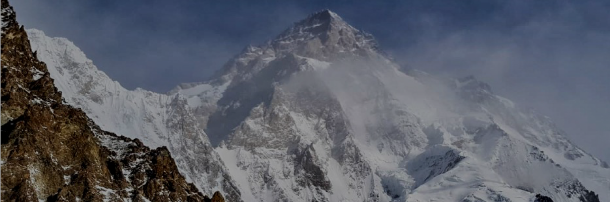
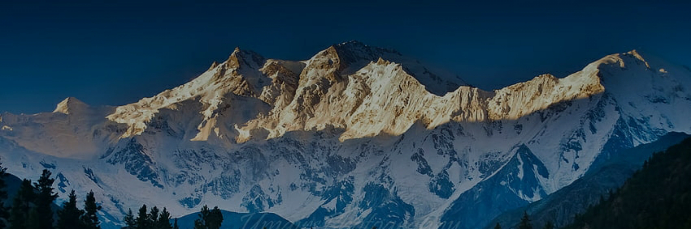
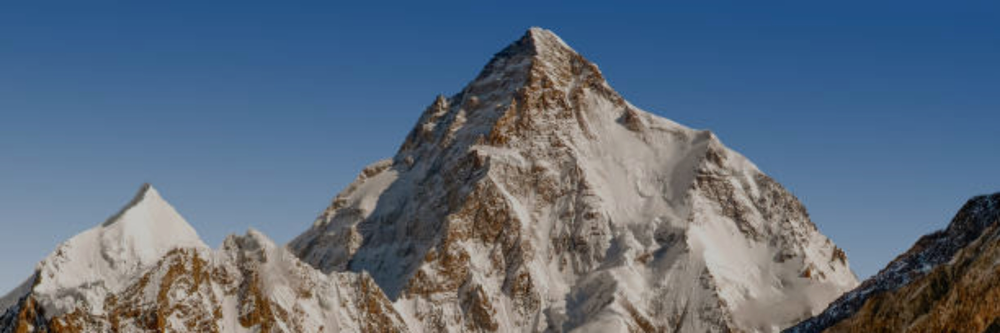

Mount Everest
Height: 29,032
feet/8,849
meters
Country: Nepal/Tibet
karakoram
Height: 28,251 feet/8,611 meters
Country: Pakistan/China

Kangchenjunga
Height: 28,169 feet/ 8,586
meters
Country: Nepal/India
Lhotse
Height: 27, 940 feet/8,516 meters
Country: Nepal/Tibet
Makalu
Height: 27,838 feet/8,485 meters
Country: Nepal/Tibet
Cho Oyu
Height: 26,864 feet/8,188 meters
Country: Nepal/Tibet
Dhaulagiri
Height: 26,795 feet/8,167 meters
Country: Nepal
Manaslu
Height: 26,781 feet/8,163 meters
Country: Nepal
Nanga Parbat
Height: 26,660 feet/8,126
meters
Country: Pakistan

Annapurna I
Height: 26,545 feet/8,091 meters
Country: Nepal
Gasherbrum I
Height: 26,509 feet/8,080 meters
Country: Pakistan/China

Broad Peak
Height: 26,414 feet/8,051 meters
Country: Pakistan/China